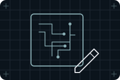
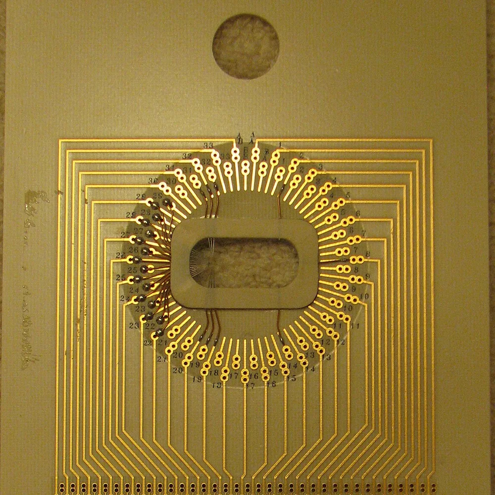
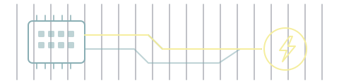

Chipdesign, fabrikker, produktionsudstyr og hukommelse er forskellige forretninger. Følg chippen gennem kæden, og se, hvorfor et selskab kan være centralt uden selv at fremstille den færdige chip.
Chips bliver lavet mange ad gangen på en wafer: en tynd, rund skive, oftest af silicium. Men ingen chip bliver lavet af ét selskab alene. Denne side følger hænderne bag chippen.
791,7 mia. USDSå stort var verdens samlede salg af halvledere i 2025, ca. 5.242 mia. kr. Det svarer i størrelse til ca. 1,7 gange Danmarks BNP.
af fonden ligger i chiptemaet. Temaet tæller hele kæden bag chippen med, også selskaber, der ikke selv laver chips. Alle procenter på siden er andele af hele fonden, afdelingen PMINDI (NewDeal Invest klasse n, den udloddende andelsklasse, der udbetaler udbytte) pr. 16.10.2026.
Det er knap hver fjerde krone i fonden. Til sammenligning ligger 16,96 % i Energi og elnet, fondens næststørste tema. På sin hjemmeside skriver NewDeal Invest, at porteføljerne har et særligt fokus på kunstig intelligens, infrastruktur, mikrochips og spacetech.
Chips bruges til meget mere end AI. Hos TSMC kom 29 % af omsætningen i 2025 fra chips til smartphones og 5 % fra chips til biler.
Hvor stor en del af selskabernes omsætning, der kommer fra AI, kan ikke beregnes. De fleste selskaber opgør det ikke for sig, og mange af de samme chips bruges både til AI og til meget andet.
75 af fondens 373 selskaber
8 trin fra tegning til færdig chip
Største chipselskab: Samsung Electronics, 1,32 % af fonden. Kun tre selskaber i fonden fylder mere: Tesla, SoftBank Group og SpaceX.
De 10 største selskaber i chiptemaet fylder tilsammen 8,96 % af fonden
Andel af hele fonden, afdelingen PMINDI pr. 16.10.2026
Samsung Electronics1,32 % af fonden
Taiyo Yuden1,05 % af fonden
SK hynix1,04 % af fonden
Cerebras Systems0,94 % af fonden
LPKF Laser & Electronics0,89 % af fonden
Kioxia0,85 % af fonden
GlobalFoundries0,77 % af fonden
Tower Semiconductor0,75 % af fonden
Soitec0,68 % af fonden
Nova0,67 % af fonden
Navnet på chippen og hænderne bag den
Mange kender NVIDIA som navnet på AI-chips. I regnskabsåret, der sluttede 25.01.2026, havde selskabet en omsætning på 215,9 mia. USD. Samme år brugte det 6,0 mia. USD på anlæg og immaterielle aktiver, altså fx bygninger, maskiner og rettigheder. Det er 2,8 % af omsætningen. NVIDIA har ingen egne chipfabrikker: selskabet tegner chipsene, og andre laver, samler og tester dem.
Omsætning, ca. 1.430 mia. kr.215,9 mia. USD
Anlæg og immaterielle aktiver, ca. 40 mia. kr.6,0 mia. USD
Pengene ligger i hele kæden bag chippen, og de kendte navne fylder lidt: NVIDIA 0,26 %, ASML 0,09 %, AMD 0,04 % og TSMC 0,03 %. Siden bruger alligevel NVIDIA og TSMC som eksempler, fordi mange kender dem.
Siden deler kæden op i otte trin. I de fem første bliver chippen tegnet, får sine materialer, bliver bygget op af maskiner, bliver fremstillet og til sidst samlet og testet. De tre sidste trin er de opgaver, den færdige chip kan have: at regne, huske eller styre strøm og signaler.
Andel af fonden pr. 16.10.2026 (afdelingen PMINDI)
Her er fondens 24,31 % i chips delt op på de otte trin:
37 af de 75 selskaber laver ikke selv chips. 34 af dem laver software til chipdesign, materialer og maskiner eller samler og tester chips. De sidste 3 står under den færdige chip: Taiyo Yuden laver komponenter, og Western Digital og Seagate laver harddiske. De 3 fylder tilsammen 1,84 % af fonden. Og 5 er kontraktproducenter, der laver chips for andre.

Trin 1 af 8 · Fremstillingen
1TegnesSoftware til chipdesign
0,15 %af fonden · 2 selskaber
En chip begynder som en tegning. Ingeniører tegner og afprøver den i særlig software, før noget bliver lavet. Her står de to selskaber, der laver softwaren. NVIDIA og de andre selskaber, der tegner selve chippen, står under trin 6 til 8, efter det, chippen bruges til.
Tryk på et selskab for at se, hvad det laver.
Trin 2 af 8 · Fremstillingen
2MaterialerSkiver og kemi
1,50 %af fonden · 5 selskaber
Det hele starter med skiven, waferen. Nogle af selskaberne her laver skiver af andre halvledermaterialer end silicium. Fabrikken skal også bruge meget rene materialer og kemikalier.
Materialer og skiver
Soitec0,68 % af fonden
Laver særlige skiver (wafers), hvor et tyndt isolerende lag ligger under siliciummet.
På fabrikken bygges chippen op lag på lag. Maskiner lægger tynde lag på skiven og belyser et mønster på den. At belyse mønstret kaldes litografi. Derefter ætser maskinerne mønstret ud, dvs. fjerner det materiale, der ikke skal være der, og skiven bliver renset. Undervejs bliver der målt, for en lille fejl kan ødelægge mange chips.
ASMLs omsætning i 2025 kom bl.a. fra 48 af sine mest avancerede litografimaskiner, der belyser med ekstremt ultraviolet lys (EUV).
ASML viser, hvordan små dråber af tin bliver til EUV-lys inde i maskinen. Video fra ASML, 21.08.2025, 2:18, på engelsk: “Inside the machine: How a High NA system generates EUV light”. Se på YouTube (åbner i nyt vindue)
Procesudstyr og måling
LPKF Laser & Electronics0,89 % af fonden
Laver laserudstyr til fremstilling. En del af udstyret bruges til glas, når chips pakkes. Resten bruges til printplader, solceller og lasersvejsning.
Trin 4 af 8 · Fremstillingen
4FremstillesChipfabrikker for andre
2,29 %af fonden · 5 selskaber
Flere af de kendte chipselskaber, fx NVIDIA og AMD, har ingen egen fabrik til chipsene. De sender tegningen til en kontraktproducent, altså en fabrik, der laver chips for andre. Samsung og Intel har egne fabrikker, men i fondens inddeling står Samsung under Husker og Intel under Regner.
Hos TSMC kom 58 % af omsætningen i 2025 fra chips til tunge beregninger, som TSMC kalder High Performance Computing.
Rundtur på en chipfabrik: fra fotomaske og wafer over belysning og ætsning til test og indkapsling. Video fra TSMC Museum of Innovation, 22.02.2024, 7:55, på engelsk: “TSMC Fab Tour”. Se på YouTube (åbner i nyt vindue)
En chip er for lille og skrøbelig til at sidde alene i en computer. Den bliver forbundet og kapslet ind. Det kaldes pakning. Chippen bliver testet, mens den stadig sidder på skiven, og igen når den er færdig.

Et probekort tester chippen, mens den stadig sidder på waferen. Foto: Ajoones, CC BY 3.0, Wikimedia Commons (beskåret)
B
Samling og pakning
Besi0,64 % af fonden
Laver maskiner, der samler chips, også meget tæt sammen i én pakke.
Nu er chippen færdig.
Trin 6 af 8 · Den færdige chip
6RegnerProcessorer og AI-chips
2,51 %af fonden · 7 selskaber
Processorer laver selve beregningerne. En AI-accelerator er en chip, der er bygget til at regne mange små regnestykker på én gang. Her står flere af de navne, de fleste kender. Hele trinnet fylder 2,51 % af fonden. Det er omkring en tiendedel af fondens 24,31 % i chips.
Processorer og AI-chips
Cerebras Systems0,94 % af fonden
Udvikler en computerplatform til kunstig intelligens med egne systemer og software. Selve processoren laves af TSMC.
En regnechip er kun så hurtig, som data kan komme frem til den. Arbejdshukommelse holder data tæt på chippen, mens den regner. Flashhukommelse og harddiske gemmer data, også når strømmen er slået fra. Det er det største af de otte trin, og her står temaets største selskab, Samsung Electronics.
Western Digital og Seagate laver harddiske, ikke chips. De står her, fordi de gemmer data i de samme computere.
SE
Arbejdshukommelse og chips, der forbinder den
Samsung Electronics1,32 % af fonden
Laver hukommelseschips og processorer til mobiler og producerer chips for andre. Koncernen laver også fx tv og telefoner.
8Styrer strøm og signalerStrøm-, styre- og forbindelseschips
4,54 %af fonden · 19 selskaber
Alle chips skal have strøm i præcis den rigtige mængde, og de skal kunne tale med omverdenen. Strømchips omformer og fordeler strømmen. Andre chips holder takten, så alle dele arbejder i samme tempo, sender trådløst eller tager imod signaler fra sensorer og kameraer. Trinnets største selskab, Taiyo Yuden, laver små komponenter, der sidder ved siden af chipsene.
TY
Komponenter
Taiyo Yuden1,05 % af fonden
Laver små elektroniske komponenter, fx kondensatorer, der sidder ved siden af chipsene i elektronik. Det er ikke selv chips.
Kort fortalt Kontoen Sravan Kundojjala oplyser, at TSMCs omsætning i september steg 48,1 % i forhold til september sidste år, til 16,133 mia. USD. Ifølge opslaget var omsætningen i årets første ni måneder større end i hele 2025. TSMC opgør selv omsætningen i september 2026 til 511,9 mia. taiwanske dollar, 54,6 % mere end i september 2025. Procenterne er forskellige, fordi kontoen måler i USD og TSMC i taiwanske dollar.
Kort fortalt Nikkei Asia skriver, at Intels topchef Lip-Bu Tan siger, at Intels kontraktproduktion af chips har brug for „stærk“ støtte fra staten. Ifølge Nikkei Asia vurderer han også, at chips fra Kina ikke ligger langt efter amerikansk teknologi.
Kort fortalt Bloomberg gengiver, at Carmen Li, topchef i Silicon Data, siger, at der stadig er „stor efterspørgsel“ efter ældre AI-chips. Ifølge Bloomberg er priserne på NVIDIAs H100-chip fortsat høje, fordi der er mangel på chips.
Kort fortalt Mediet The Information skriver, at NVIDIA er med til at finansiere efterspørgslen efter sine egne chips gennem investeringer og tilsagn for over 170 mia. USD, mens aktierne falder i AI-cloududbydere, der lejer computerkraft til AI ud, og flere NVIDIA-støttede selskaber udskyder planerne om at få deres aktier noteret.
Kort fortalt SK hynix beskriver, hvordan selskabets HBM-hukommelse, avanceret pakning og PIM (processing-in-memory) bringer data og beregning tættere sammen. Formålet er ifølge SK hynix at forbedre AI-systemernes ydelse og effektivitet.
HBM er arbejdshukommelse, hvor flere hukommelseschips er stablet oven på hinanden. PIM betyder, at en del af beregningen sker inde i selve hukommelsen.
Opslagene er udvalgt af teamet bag NewDeal Invest. Afsenderne og de nævnte selskaber står ikke bag denne side, og opslagene er ikke fondens vurdering.
Det skal man vide
Chipselskabernes salg har historisk svinget meget, fordi efterspørgslen går i cykler, især efter hukommelse, temaets største trin (5,45 % af fonden). Flere af chipselskaberne, blandt dem TSMC og NVIDIA, er afhængige af produktion i Taiwan og påvirkes af USA's regler for eksport af chips og chipmaskiner til Kina.
Illustration: NewDeal Invest.
Videre
Chippen skal have strøm

Ingen chip virker uden strøm, og strømmen kommer fra kraftværker og elnet. Energi og elnet er fondens næststørste tema.
Også med en fod i chips: 9 selskaber fra andre temaer
De laver også chips eller chipsdele, men deres hovedforretning hører til et andet tema i fonden. De tæller ikke med i de 75 selskaber og de 24,31 %. Tilsammen er de 2,04 % af fonden.
Raspberry PiRobotter & fysisk AI0,60 %
Macom Technology SolutionsDatacentre0,46 %
ams-OSRAMDatacentre0,27 %
CredoDatacentre0,27 %
Solstice Advanced MaterialsRåstoffer0,15 %
SemtechDatacentre0,11 %
Horizon RoboticsRobotter & fysisk AI0,10 %
Astera LabsDatacentre0,07 %
ApplePlatformsøkonomi0,01 %
Kilder og kreditering
Andele: afdelingen PMINDI pr. 16.10.2026 (fondens data). Fordelingen på trin følger fondens egen inddeling af chipselskaberne. Beskrivelserne af selskaberne bygger på deres egne årsrapporter og hjemmesider. Fondens fokus: NewDeal Invests hjemmeside, siden Porteføljer (newdealinvest.dk/portefoljer, hentet 19.10.2026).
Verdens salg af halvledere 2025: Semiconductor Industry Association, 06.02.2026 (semiconductors.org).
NVIDIA: årsrapport (10-K) for regnskabsåret til 25.01.2026 (sec.gov).
TSMC: årsrapport (20-F) for 2025, 16.04.2026 (sec.gov).
ASML: resultater for 4. kvartal og hele 2025, 28.01.2026 (sec.gov).
Danmarks BNP 2025, 3.118,5 mia. kr.: Danmarks Statistik, tabel NAN1 (statbank.dk). Omregning til kroner med Nationalbankens årsgennemsnit for 2025, tabel DNVALA (statbank.dk). Omregninger og sammenligninger er vores egne beregninger.
Kreditering
Waferen, chippen på printpladen, tegninger og ikoner. Illustration: NewDeal Invest. Probekortet: foto af Ajoones, CC BY 3.0, Wikimedia Commons (beskåret).
Videoerne er fra ASML og TSMC Museum of Innovation og vises fra YouTube, først når du trykker på dem. Opslagene er fra X. Logoer tilhører de enkelte selskaber og viser kun, hvilke selskaber fonden ejer aktier i. Afsenderne og selskaberne står ikke bag denne side, og der er intet samarbejde med dem.